Gatorade was entering the crowded protein category with its own shakes and bars, with a clear goal: make the packaging impossible to miss.
We created dramatic, hand-crafted stop-motion videos with the four major sports leagues, putting the product front and center. The films showed teen athletes that Gatorade isn’t just trusted for in-game hydration, but also for post-game nutrition.
Athlete Building Animated Series
Director: Rob Shaw · BENT Image Lab
Instagram Recover Journey
Using Instagram’s link tagging, teen athletes were invited into a “choose your own path” experience that helped them get more out of every workout with Gatorade Recover. Guided by Gatorade’s youngest roster athlete, Jabari Parker, the journey unfolded through striking imagery, GIFs, and video, pairing real training moments with protein usage and workout tips straight from the pros.
Photographer: Dennis Leupold
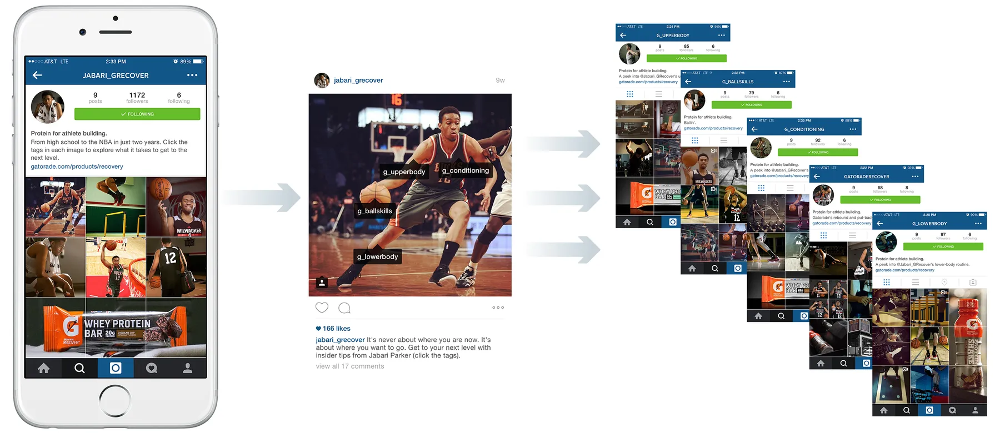
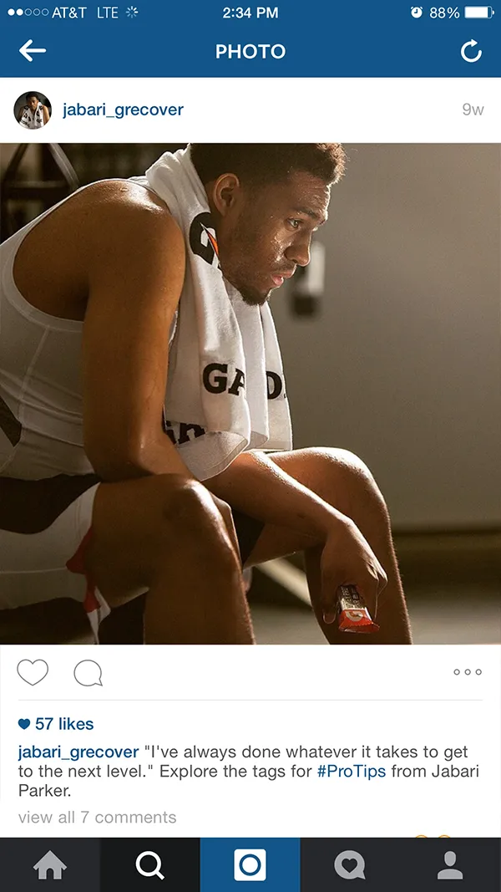
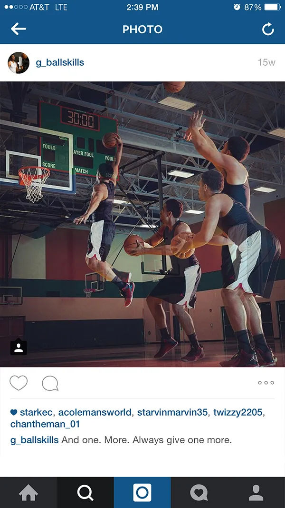
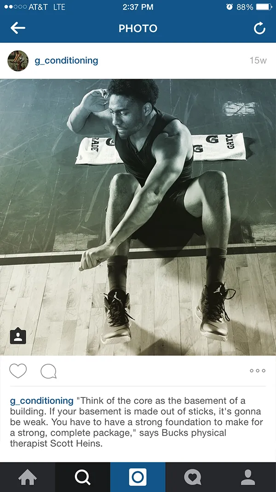
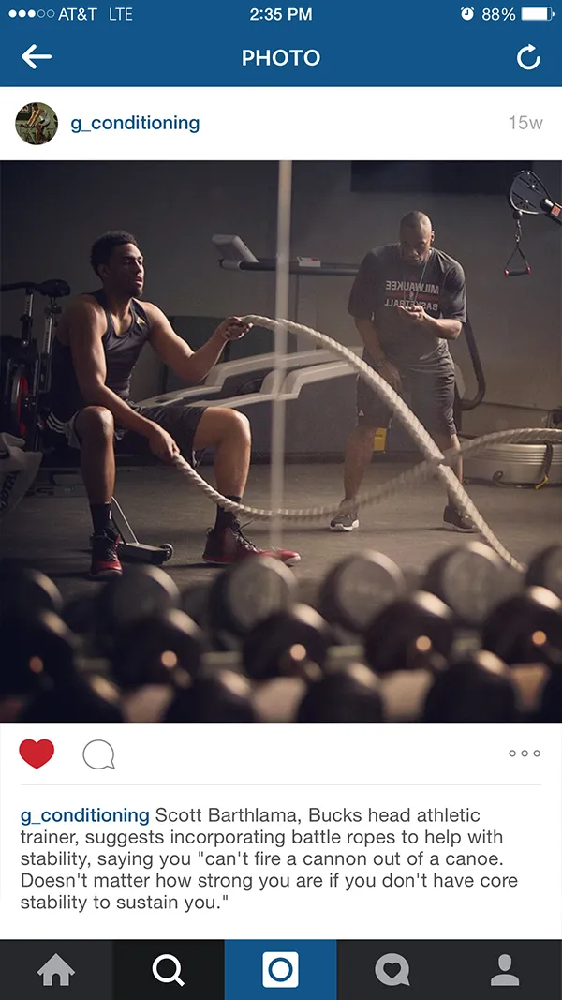
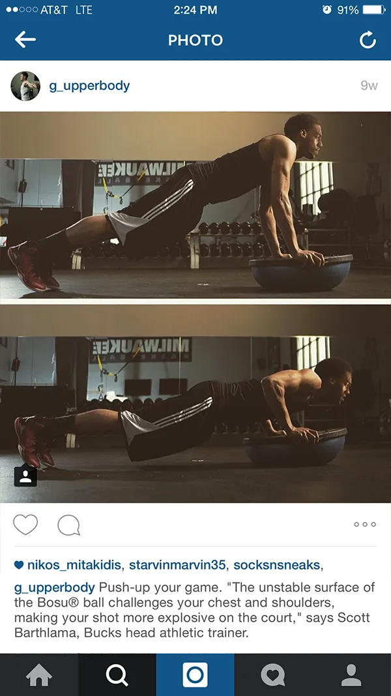
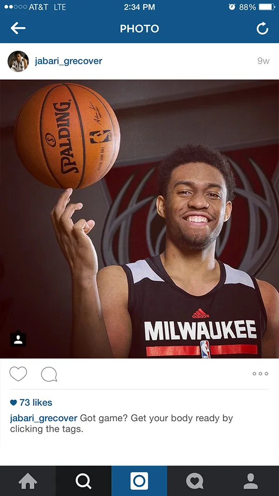
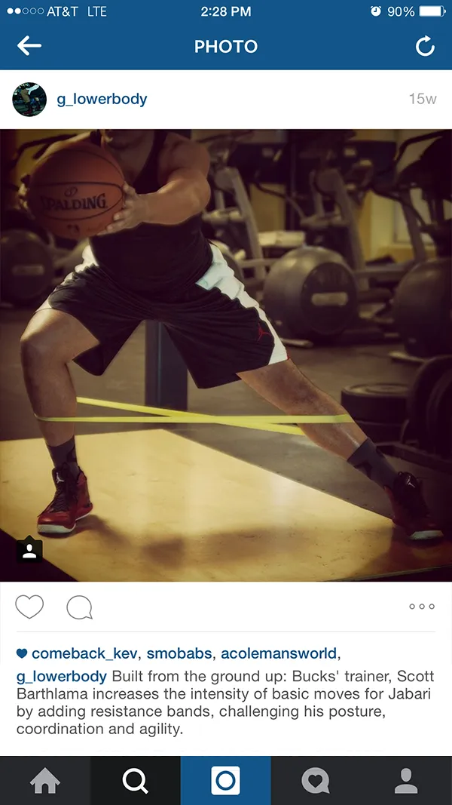
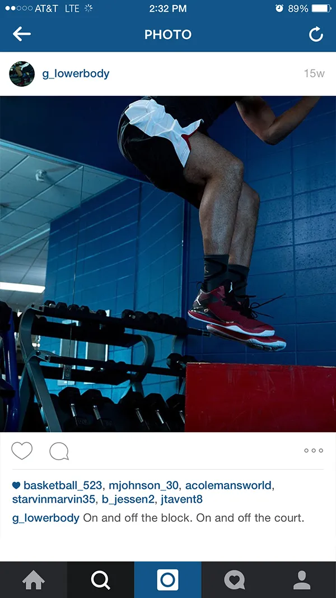
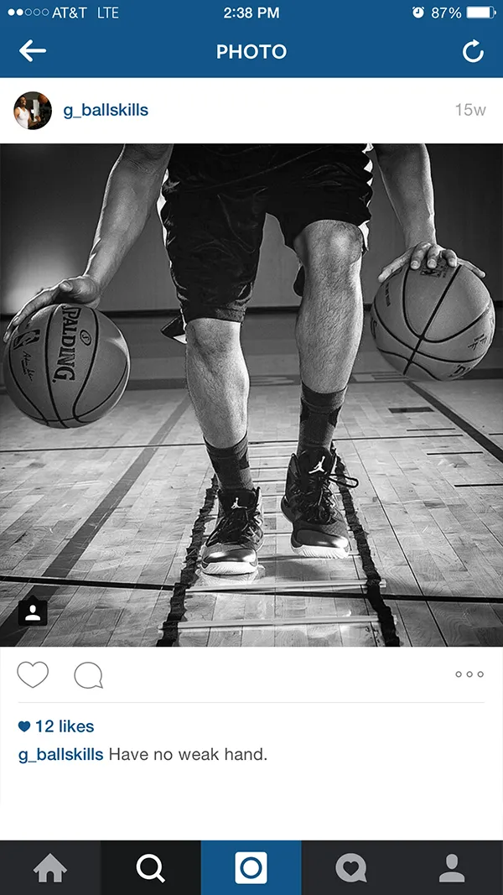
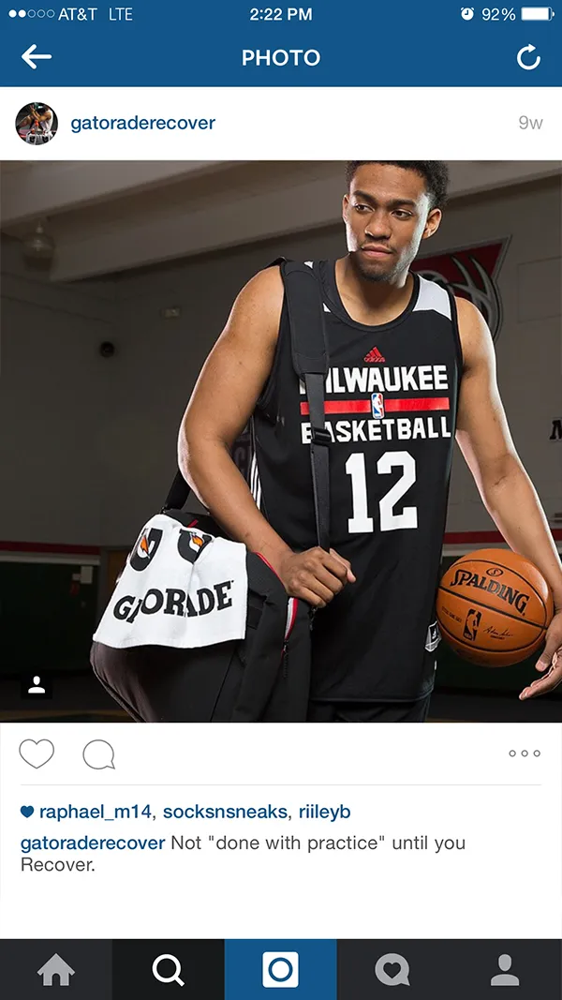
Credits
- Executive Creative DirectorTony Snethen
- Group Creative DirectorMatt Bowne
- Creative DirectorDerek Anderson
- Associate Creative DirectorAdam LaRocca
- Associate Creative DirectorMaggie Harn
- Art DirectorAmanda Laffoon
- CopywriterRobert Abasolo
- AgencyVML

Next project
Grab Life
Belize Tourism Board